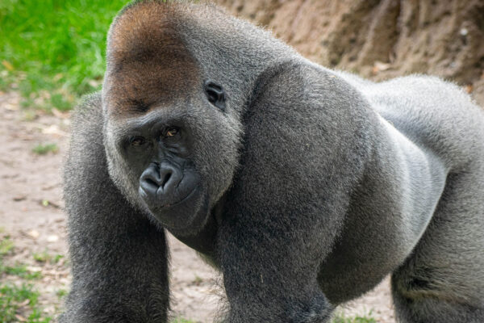
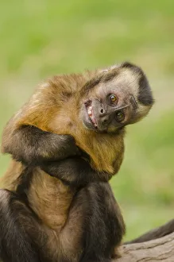

Gorilla
Gorillas are the largest primates in the world. They live in forests in central Africa and are known for their strength, intelligence, and gentle nature. Gorillas live in family groups called troops, led by a dominant male known as a silverback. They mostly eat fruits, leaves, and plants, and they communicate using sounds, gestures, and facial expressions.
Capuchin Monkey
Capuchin monkeys are small, clever primates known for their curiosity and intelligence. They live in Central and South America and are often seen using tools, solving problems, and working together in groups. Capuchins have long tails, expressive faces, and are very social. Because of their smart behavior, they are often featured in movies and research studies.